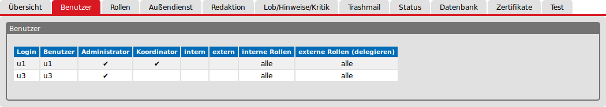

Administrationshandbuch
Klarschiff Backend
erstellt von
Änderungsübersicht
| Version | Datum | Bearbeiter | Beschreibung |
| 1.0 | 10.2011 | Stefan Audersch | |
| 2.0 | 10.2015 | BFPI | Komplette Überarbeitung |
Klarschiff ist eine Webanwendung. Sie wurde mithilfe der plattformunabhängigen objektorientierten Programmiersprache Java entwickelt. Grundlage für die Datenhaltung bildet eine PostgresSQL-Datenbank, die in ein Geoinformationssystem eingebunden werden kann. Zusätzliche Anwendungen wurden in der Programmiersprache Ruby erstellt. Klarschiff wird unter der GNU General Public License veröffentlicht. Die Quellen findet man unter https://github.com/bfpi.
Inhaltsverzeichnis
Die folgende Software muss in Abhängigkeit des verwendeten Betriebssystems installiert sein.
Alle im weiteren Kontext verwendeten Versionsangaben zur verwendeten Software beziehen sich auf deren Stand zum Redaktionszeitpunkt dieser Beschreibung. Der Anwender sollte Kenntnisse über die Verfahren der Softwareinstallation für das von ihm verwendete Betriebssystem verfügen.
Hinweis: Bei der Installation unter dem Betriebssystem MS Windows sollte darauf geachtet werden, dass die Software nicht im Standardverzeichnis für Programme installiert wird. Im Standardverzeichnis wird das Schreiben von Dateien teilweise durch das UAC (Benutzerkontensteuerung) verhindert bzw. erschwert. Ein Schreiben von Dateien ist aber notwendig.
Es muss mindestens die Version 7 des JDK Servers (Java SE Development Kit) installiert sein. Die aktuellste Version des JDK – Servers findet man unter http://www.oracle.com/technetwork/java/javase/downloads/index.html.
Zum Betreiben von Klarschiff und des Geoservers wird nur Java Runtime Environment (JRE) benötigt. Will man das Build-Management-Tool Maven nutzen, benötigt man das komplette Java SE Development Kit (JDK), welches auch die JRE-Umgebung enthält.
Wird auf der Willkommenseite des Geoservers den Hinweis „Keine starke Kryptographie verfügbar” angezeigt findet man unter http://docs.geoserver.org/latest/en/user/production/java.html#java-policyfiles eine Anleitung zur Nachinstallation der entsprechen JAR-Dateien.
Das Aufsetzen der Datenbank beginnt mit der Installation der PostgreSQL-Datenbank ab der Version 9.4 mit PostGIS ab der Version 2.1. Für die Administration der Datenbank kann die grafische Oberfläche pgAdmin III installiert werden.
Die aktuelle PostgreSQL-Datenbank kann unter http://www.postgresql.org/download/ heruntergeladen werden.
Hinweis: Für das Betriebssystem Windows ist eine grafische Installationsroutine vorhanden. Hier wird pgAdmin III automatisch mit installiert. Weiterhin ist nach der Installation von PostgreSQL ein grafisches Tool zum Installieren von zusätzlicher Software für die Datenbank vorhanden. Unter Start -> Alle Programme -> PostgreSQL 9.4 ist dies der Application Stack Builder. Dieser muss mit Administratorrechten gestartet werden. Nach dem Start und der Auswahl der lokalen Datenbank findet man unter dem Punkt Spatial Extensions die PostGIS-Erweiterung in der Version 2.1. Mit der Aktivierung der Checkbox wird die entsprechende Erweiterung installiert.
Nach der Installation von PostgreSQL mit PostGIS müssen spezielle Datenbanknutzer und Datenbanken angelegt werden.
Die Datenbank klarschiff_frontend wird von der Datenbank klarschiff_backend initialisiert. Weiterhin werden die Daten der Datenbank klarschiff_backend während des Betriebs von der Datenbank klarschiff_frontend publiziert. Um dieses zu gewährleisten, muss die Erweiterung dblink eingerichtet werden. Dieses erfolgt innerhalb der Datenbank klarschiff_backend mit
CREATE EXTENSION dblink;
Um eine Verbindung zum PostGIS herzustellen, muss innerhalb der Datenbanken klarschiff_backend und klarschiff_frontend die Erweiterung bekanntgegeben werden. Dieses erfolgt jeweils mit:
CREATE EXTENSION postgis;
Nach dem Anlegen der Grundlagen für die Standortsuche muss das SQL-Skript standortsuche.sql ausgeführt werden. Es werden die notwendigen Tabellen angelegt.
Hinweis: Bei der Installation unter dem Betriebssystem MS Windows kann die aktuellste Version des Softwarepakets XAMPP genutzt werden. Es besteht die Möglichkeit, die Installation der Datenbank MySQL, des FTP-Servers FileZilla und des Mailservers Mercury abzuwählen. Es werden dann die Webserver Apache und Apache Tomcat sowie die Skriptsprache PHP installiert.
Im Zusammenhang mit Klarschiff wird der frei verfügbare Webserver Apache ab der Version 2.4 genutzt.
Der Webserver Apache sollte an folgenden Ports laufen.
| Port | Nummer |
| Main | 80 |
| SSL | 443 |
Aktuelle Informationen zur Installation des Webservers Apache findet man unter http://httpd.apache.org/download.cgi.
Aktivierung der Module:
Für den Betrieb des Backends von Klarschiff ist eine Installation des Webservers Apache Tomcat ab der Version 7 notwendig.
Der Webserver sollte an folgenden Ports laufen:
| Port | Nummer |
| Main | 8005 |
| AJP | 8009 |
| HTTP | 8080 |
Aktuelle Informationen zu Versionen und eine Dokumentation findet man unter https://tomcat.apache.org/index.html.
Arbeitsspeichervergrößerung:
Bei der Vergrößerung des Arbeitsspeichers ist der vorhandene physikalische Speicher des Servers zu beachten. Es kann nicht mehr Speicher frei gegeben werden als vorhanden ist.
Windows: Aufruf des Programms „Configure Tomcat” unter Start -> Alle Programme -> Apache Tomcat x.0. Auf der Registerkarte „Java” im Feld „Initial memory pool” den Wert 1024 und im Feld „Maximum memory pool” den Wert 2048 eintragen. Im Feld „Java Options” sind die folgenden Parameter einzutragen:
-Djava.awt.headless=true
-XX:PermSize=256m
-XX:MaxPermSize=512m
-XX:+CMSClassUnloadingEnabled
-XX:+UseConcMarkSweepGC
-Dfile.encoding=UTF8
Linux: In der Datei /etc/default/tomcatx den Eintrag auf
JAVA_OPTS="-Djava.awt.headless=true -Xms1024m -Xmx2048m -XX:PermSize=256m -XX:MaxPermSize=512m
-XX:+CMSClassUnloadingEnabled -XX:+UseConcMarkSweepGC -Dfile.encoding=UTF8"
ändern.
Für alle Betriebssysteme muss der AJP-Connector in der Datei Server.xml aktiviert werden.
< Connector address="127.0.0.1" port="8009" protocol="AJP/1.3" packetSize="65536" redirectPort="8443" />
Für die Herstellung der Verbindung zwischen den Webservern Apache und Apache Tomcat wird eine Datei klarschiff.conf genutzt. In ihr befinden sich alle Konfigurationsparameter, die für die Zusammenarbeit von Klarschiff mit den Webservern und dem Geoserver benötigt werden. Diese Konfigurationsdatei muss beim Start des Webservers Apache mit geladen werden. Der Inhalt und die Verfahren zur Aktivierung dieser Datei sind abhängig vom verwendeten Betriebssystem.
Weiterleitungen für Zugriffe auf Geodienste (GeoServer) jeweils via AJP auf das entsprechende GeoServer-Skript)
Die folgenden Angaben korrespondieren auch mit dem Inhalt der Datei urls.php. Das „.../klarschiff/...” in den URIs bezieht sich auf die URI des Namensraumes für den Arbeitsbereich im Geoserver
<Location /ows/klarschiff/ows>
ProxyPass ajp://localhost:8009/geoserver/klarschiff/ows
ProxyPassReverse ajp://localhost:8009/geoserver/klarschiff/ows
# serverseitige Komprimierung der ausgelieferten Inhalte
SetOutputFilter DEFLATE
BrowserMatch \bMSIE !no-gzip !gzip-only-text/html
SetEnvIfNoCase Request_URI \.(?:gif|jpe?g|png)$ no-gzip dont-vary
Header append Vary User-Agent env=!dont-vary
</Location>
<Location /ows/klarschiff/wfs>
ProxyPass ajp://localhost:8009/geoserver/klarschiff/wfs
ProxyPassReverse ajp://localhost:8009/geoserver/klarschiff/wfs
# serverseitige Komprimierung der ausgelieferten Inhalte
SetOutputFilter DEFLATE
BrowserMatch \bMSIE !no-gzip !gzip-only-text/html
SetEnvIfNoCase Request_URI \.(?:gif|jpe?g|png)$ no-gzip dont-vary
Header append Vary User-Agent env=!dont-vary
</Location>
<Location /ows/klarschiff/wms>
ProxyPass ajp://localhost:8009/geoserver/klarschiff/wms
ProxyPassReverse ajp://localhost:8009/geoserver/klarschiff/wms
# serverseitige Komprimierung der ausgelieferten Inhalte
SetOutputFilter DEFLATE
BrowserMatch \bMSIE !no-gzip !gzip-only-text/html
SetEnvIfNoCase Request_URI \.(?:gif|jpe?g|png)$ no-gzip dont-vary
Header append Vary User-Agent env=!dont-vary
</Location>
„Rewrite-Regeln” für Klarschiff
(P: Proxy-Regeln anwenden; QSA: vorhandenen Query-String beibehalten; L: bei Matching keine weiteren Rewrite-Rules mehr prozessieren)
Nach der Erstellung einer Meldung erhält der Anwender eine E-Mail. Mithilfe der folgenden Regeln erfolgt die Generierung einer URL. Diese URLs werden in einer E-Mail dem Nutzer zur Bestätigung seiner Meldung zur Verfügung gestellt.
RewriteRule ^.*(missbrauchsmeldungBestaetigung/.*)$ http://localhost:8080/backend/service/$1 [P,QSA,L]
RewriteRule ^.*(unterstuetzerBestaetigung/.*)$ http://localhost:8080/backend/service/$1 [P,QSA,L]
RewriteRule ^.*(vorgangBestaetigung/.*)$ http://localhost:8080/backend/service/$1 [P,QSA,L]
RewriteRule ^.*(vorgangLoeschen/.*)$ http://localhost:8080/backend/service/$1 [P,QSA,L]
Hier erfolgt die Übersetzung zum Controller Backend und stellt damit die Verarbeitung der Anfragen vom Frontend sicher.
Die folgenden Angaben gewährleisten eine Weiterleitung für geschützte Zugriffe auf das Klarschiff-Backend.
<Location /backend>
ProxyPass ajp://localhost:8009/backend
ProxyPassReverse ajp://localhost:8009/backend
# serverseitige Komprimierung der ausgelieferten Inhalte
SetOutputFilter DEFLATE
BrowserMatch \bMSIE !no-gzip !gzip-only-text/html
SetEnvIfNoCase Request_URI \.(?:gif|jpe?g|png)$ no-gzip dont-vary
Header append Vary User-Agent env=!dont-vary
</Location>
Unter http://php.net/downloads.php findet man die neuesten Informationen zu den aktuellen Versionen von PHP. Bei der PHP-Installation ist darauf zu achten, dass die folgenden Erweiterungen installiert und initialisiert sind:
Einen Überblick über die Konfiguration von PHP verschafft der Aufruf der Datei phpinfo.php im Browser. Sind die genannten Erweiterungen nicht aufgeführt müssen sie in der Datei php.ini aktiviert werden. Wurden Änderungen an der php.ini durchgeführt, muss in jedem Fall der Webserver Apache neu gestartet werden.
Der GeoServer benötigt mindestens Java 7. Welche Version zur Zeit unterstützt werden findet man unter http://docs.geoserver.org/latest/en/user/installation/win_binary.html. Die notwendigen Dateien für die Installation können von http://geoserver.org/release/stable/ heruntergeladen werden. Unter „Web Archive” erfolgt das Herunterladen einer ZIP-Datei. Diese enthält eine Datei geoserver.war. Dieser Servlet Container muss in den vom Betriebssystem abhängigen Verzeichnis (...webapps) für die Anwendungen des Webservers Apache Tomcat kopiert werden. Der Webserver installiert dann automatisch den GeoServer.
Die Aktualisierung des Kartenservers erfolgt auf dem gleichen Weg. Dabei ist zu beachten, dass der komplette Inhalt des Verzeichnisses ..webapps\geoserver überschrieben wird. Alle selbst erstellten Daten gehen dabei verloren. Aus diesem Grund sollte das komplette Verzeichnis data unter dem Verzeichnis ..webapps\geoserver verschoben werden. Dazu muss der Webserver Apache Tomcat gestoppt werden.
Bei der Verwendung des Kartenservers Geoserver muss der Arbeitsspeicher erweitert werden. Wurde das Verzeichnis data verschoben muss dessen Pfad bekannt gegeben werden.Dieses erfolgt mit der Änderung der Umgebungsvariablen GEOSERVER_DATA_DIR. Dem Webserver Apache Tomcat sind dann die folgenden Parameter zu übergeben:
-DGEOSERVER_DATA_DIR=\irgendwo\data
-Djava.awt.headless=true
-XX:PermSize=1024m
-XX:MaxPermSize=1024m
-XX:+CMSClassUnloadingEnabled
-XX:+UseConcMarkSweepGC
-Dfile.encoding=UTF8
JAVA_OPTS="-Djava.awt.headless=true -Xms8192m -Xmx8192m -XX:PermSize=1024m -XX:MaxPermSize=1024m
-XX:+CMSClassUnloadingEnabled -XX:+UseConcMarkSweepGC -DGEOSERVER_DATA_DIR=/irgendwo/data -Dfile.encoding=UTF8"
ändern.
Im Geoserver werden Layer konfiguriert, die mittels verschiedener Protokolle abgerufen werden können. Die Layer erhalten ihre Daten aus Datenspeichern. Layer und Datenspeicher werden Arbeitsbereichen zugewiesen. Nach der Installation von Geoserver sind mehrere Beispiellayer, -datenspeicher und -arbeitsbereiche vorhanden. Diese können gelöscht werden.
Es müssen zwei Arbeitsbereiche angelegt werden.
| Name | Namensraum-URI | Standardarbeitsbereich | Beispiel | Bemerkungen |
| klarschiff | http://domain/ows/klarschiff | ja | http://musterstadt.de/ows/klarschiff | Arbeitsbereich für den Standort |
| zufi | http://domain/ows/zufi | nein | http://musterstadt.de/ows/zufi | Arbeitsbereich Zuständigkeitsfinder |
Zu jedem angelegten Arbeitsbereich muss ein [Datenspeicher] angelegt werden.
Zur Erstellung eines neuen Layers wird aus dem Datenspeicher eine Tabelle publiziert. Dabei gelten folgende Zuordnungen:
| Datenquelle | Name | Angegebenes Koordinatenreferenzsystem |
| localhost_klarschiff_frontend | stadtteile | EPSG:25833 |
| localhost_klarschiff_frontend | vorgaenge | EPSG:25833 |
| localhost_klarschiff_frontend | klarschiff_geo_rss | EPSG:25833 |
Das Backend und das Frontend von Klarschiff verfügen über eine Funktion für die Adress- und Standortsuche. Hier wird die Programmbibliothek Apache Lucene der Apache Software Foundation zur Volltextsuche genutzt. Solr ist ein in Lucene enthaltenes Servlet für entsprechende Container wie dem Webserver Apache Tomcat.
Maßgebend für die Konfiguration ist die XML-Datei solr.xml Konfigurationsordner des Webservers Apache Tomcat.
<?xml version="1.0"?>
-<Context crossContext="true" debug="0" docBase="C:/share/solr/solr.war">
<Environment override="true" value="/data/solr" type="java.lang.String" name="solr/home"/>
</Context>
Hier wird dem Webserver mitgeteilt, wo sich die WAR-Datei befindet und welches das Home-Verzeichnis von Solr ist.
Zum Betreiben der Anwendung Klarschiff wird die Programmiersprache Ruby nicht benötigt. Sie ist für die Nutzung der Hilfsprogramme für den Datenimport und der Applikationen citysdk, field_service und klarschiff-xfall notwendig. Alle Erweiterungen sind mithilfe der Programmiersprache Ruby entwickelt worden. Ruby-Programme werden zur Laufzeit interpretiert.
Neben Ruby benötigt man für die Verbindung zu PostgreSQL noch das RubyGem PG. Lässt sich das RubyGem nicht einbinden, muss die Entwicklungsumgebung von Ruby installiert werden. Dieses ist abhängig vom verwendeten Betriebssystem.
Eine aktuelle Beschreibung der Installation von Ruby für die verschiedenen Betriebssysteme findet man unter https://www.ruby-lang.org/de/documentation/installation/.
GitHub ist ein webbasierter Filehosting-Dienst für Software-Entwicklungsprojekte. Zum Betrieb von Klarschiff wird GitHub aber nicht benötigt.
Klarschiff wird ständig weiterentwickelt. Die jeweils aktuellste Version des Backends und des Frontends findet man unter den Adressen die in der folgenden Tabelle aufgeführt sind.
| Anwendung | URI |
| Frontend | https://github.com/bfpi/klarschiff-frontend |
| Backend | https://github.com/bfpi/klarschiff-backend |
Mithilfe von GitHub kann mit wenigen Schritten die jeweils aktuellste Version ausgecheckt werden.
Es besteht auch die Möglichkeit, an den in der Tabelle aufgeführten Orten eine ZIP-Datei herunterzuladen. Nach dem Entpacken müssen dann die Dateien bzw. Verzeichnisse an die entsprechende Stelle kopiert werden.
Die aktuelle Version von GitHub Desktop für MS Windows findet man unter der Adresse https://windows.github.com/. Auf linuxbasierten Betriebssystemen erfolgt die Installation mithilfe der entsprechenden Paketverwaltung. Es muss das Paket Git installiert werden.
Maven ist ein Build-Management-Tool der Apache Software Foundation und basiert auf Java. Mithilfe von Maven wird die Software für das Backend in eine WAR-Datei „gepackt”. Voraussetzung für die Nutzung von Maven ist eine aktuelles Java SE Development Kit (JDK). Zur Nutzung von Maven muss die Umgebungsvariable JAVA_HOME=Pfad/zum/jdk gesetzt sein. Weiterhin muss der Pfad zu Maven in der PATH Variablen bekannt gegeben werden.
Node.js ist eine serverseitige Plattform zum Betrieb von Netzanwendungen. Node.js enthält einige Module und den Node Package Manager (npm).
Eine Installationsanleitung mithilfe eines Paketmanagers findet man unter https://github.com/joyent/node/wiki/Installing-Node.js-via-package-manager#debian-and-ubuntu-based-linux-distributions.
Die Version für MS Windows findet man unter https://nodejs.org/.
Nach der Installation muss gegebenenfalls ein Proxy angepasst werden.
npm config set proxy http://meine-proxy-domain:mein-proxy-port
npm config set https-proxy http://meine-proxy-domain:mein-proxy-port
Für die Nutzung von Klarschiff ist eine LDAP – Umgebung notwendig. In ihr werden die Nutzer, die zuständigen Gruppen und die damit verbundenen Rechte verwaltet. Ist keine LDAP – Umgebung vorhanden kann mithilfe von OpenLDAP eine solche aufgebaut werden. OpenLDAP ist Bestandteil der meisten aktuellen Linux Distributionen und kann über die Paketverwaltung installiert werden. Es sind der OpenLDAP-Server (slapd) und die OpenLDAP-Hilfsprogramme (ldap-utils) zu installieren. Eine Version für MS Windows findet man unter http://www.userbooster.de/download/openldap-for-windows.aspx.
Soll kein LDAP-Server eingerichtet werden, können mithilfe einer LDIF Datei Nutzer und zuständige Gruppen eingerichtet werden.
Beispiel LDIF-Datei:
dn: dc=klarschiff,dc=local
objectClass: organization
objectClass: top
dn: ou=users,dc=klarschiff,dc=local
objectClass: organizationalUnit
objectClass: top
description: Nutzer
dn: ou=groups,dc=klarschiff,dc=local
objectClass: organizationalUnit
objectClass: top
description: Gruppen
# Administrator
dn: uid=admin,dc=klarschiff,dc=local
objectclass: person
objectclass: oganizationalperson
objectclass: inetorgperson
uid:admin
cn: Administrator
userPassword: admin
# Nutzer1
dn: uid=u1,ou=users,dc=klarschiff,dc=local
objectclass: person
objectclass: oganizationalperson
objectclass: inetorgperson
uid: u1
cn: u1
userPassword: u1
# Nutzer2
dn: uid=u2,ou=users,dc=klarschiff,dc=local
objectclass: person
objectclass: oganizationalperson
objectclass: inetorgperson
uid:u2
cn: u2
userPassword: u2
# Gruppe Bauamt
dn: cn=bauamt,ou=groups,dc=klarschiff,dc=local
objectclass: groupOfNames
objectclass: top
cn: a66_bauamt
description: Bauamt
o: intern
member: uid=u1,ou=users,dc=klarschiff,dc=local
l: Standort irgendwo
# AdminGruppe für Klarschiff
dn: cn=admin,ou=groups,dc=klarschiff,dc=local
objectClass: groupOfNames
objectClass: top
cn: admin
member: uid=u1,ou=users,dc=klarschiff,dc=local
description: Administratoren des Backend von Klarschiff
o: admin
Die Anwendung aus dem Git-Repository klonen.
git clone https://github.com/bfpi/klarschiff-frontend /Pfad/zum/Anwendungsverzeichnis/des/Webservers/apache
oder als ZIP-Datei herunterladen und im Anwendungsverzeichnis des Webservers Apache entpacken.
Das Anwendungsverzeichnis des Webservers Apache wird in der Konfigurationsdatei des Webservers unter der Variablen DocumentRoot festgelegt. Dieses kann auch in der Datei klarschiff.conf erfolgen.
Im Anwendungsverzeichnis des Webservers Apache einen symbolischen Link auf die Datei start.php im Anwendungsverzeichnis des Frontends anlegen. In dieser Datei wird entschieden ob die mobile Variante oder die Desktop-Variante des Frontends aufgerufen wird.
Im Anwendungsverzeichnis des Frontends
npm install
in der Konsole ausführen. Es wird der Javascript Task Runner Grunt mit den notwendigen Paketen installiert. Grundlage bildet die Datei package.json.
Ist das Anwendungsverzeichnis des Frontends nicht http://localhost/frontend muss dies in der Datei Gruntfile.js auf http://localhost/webserverpfad/zum/anwendungsverzeichnis angepasst werden.
Im Anschluss
npm install -g grunt-cli
ausführen.
Zur Einrichtung der Datenbankverbindung die Datei Anwendungsverzeichnis/config/database.sample.php bearbeiten und kopieren als Anwendungsverzeichnis/config/database.php.
Installieren und einrichten der referenzierten Bibliotheken mithilfe von Grunt.
grunt install
Für die Tasks sind zwei Umgebungen vorbereitet. In der Standardkonfiguration (development) werden die Javaskripte nur zusammengefasst. Es gibt eine Überwachungsfunktion die bei Änderungen an den Quelldateien automatisch neue Builds für die Referenz in der Seite erstellt. Mit dem Setzen einer Umgebungsvariablen GRUNT_ENV=production werden die Skripte für eine bessere Leistung zusätzlich komprimiert an den Browser ausgeliefert. Eine Überwachung ist nicht konfiguriert.
Für beide Umgebungen wir der Standard Task wie folgt aufgerufen:
grunt
Die Konfigurationsdateien des Frontends befinden sich im Arbeitsverzeichnis und im Unterverzeichnis Arbeitsverzeichnis/config.
In Abhängigkeit vom verwendeten Endgerät oder Browser wird hier entschieden, ob die mobile Variante oder die Desktopvariante von Klarschiff aufgerufen wird.
In dieser Datei wird unter anderem eingetragen, unter welcher URL die Anwendungen wie
zu finden sind.
Hier werden
der Karte des Frontends festgelegt.
Weiterhin wird hier entschieden, welcher Meldungstyp Idee oder Problem oder beide möglich sind. Es werden die Platzhalter für das Meldungsformular und die möglichen Fehlermeldungen definiert.
Es erfolgt die Definition der Layer für das Frontend:
In dieser Datei erfolgt der Aufbau und die Steuerung des Menüs in der Kartendarstellung.
Das mobile Frontend für Klarschiff ist eine angepasste Version des Frontends für mobile Endgeräte wie PDA, Handhelds, Smartphones usw. Beim Ausführen der start.php wird versucht mithilfe der Browserkennungen mobile Endgeräte zu erkennen. Wird ein solcher Browser erkannt, wird das mobile Frontend verwendet. Die angewendete Methode ist nicht immer zuverlässig, weil die Browserkennung vom Nutzer verändert oder unterdrückt und die Liste aller Kennungen nur schwerlich aktuell gehalten werden kann.
Ein funktionsfähiges Build vom Klarschiff Frontend mobil sollte mithilfe eines Linux-Systems erzeugt werden. Bis zum Redaktionszeitpunkt war die Erzeugung mithilfe eines MS Windows nicht gelungen.
Die Anwendung aus dem Git-Repository klonen.
git clone https://github.com/bfpi/klarschiff-mobil /Pfad/zu/einem/Arbeitsverzeichnis
oder als ZIP-Datei herunterladen und in einem Arbeitsverzeichnis entpacken.
In diesem Arbeitsverzeichnis Espresso mithilfe von npm und der Datei package.json installieren.
npm install
alias espresso=`pwd`/node_modules/espresso/bin/espresso.js
Um ein neues Build aus den aktuellen Anwendungsquellen zu erzeugen, wird im Verzeichnis Arbeitsverzeichnis/KsMobil das Espresso-Build-Tool genutzt:
espresso build
Das fertige Build wird automatisch im Verzeichnis Arbeitsverzeichnis/KsMobil/build/{version} abgelegt. Der Inhalt dieses Verzeichnis muss dann in das Verzeichnis für das mobile Frontend des Webserver Apache kopiert oder verschoben werden.
Vor der Erstellung des Builds ist darauf zu achten, dass die entsprechenden Kartendaten, wie Mittelpunkt und die Größe der Karte, in der Datei Arbeitsverzeichnis/KsMobil/app/controllers/MapController.js eingetragen werden.
Das Verzeichnis für das mobile Frontend in der Datei urls.php im Anwendungsverzeichnis/frontend/config anpassen.
Die Anwendung aus dem Git-Repository klonen
git clone https://github.com/bfpi/klarschiff-backend /Pfad/zu/einem/Arbeitsverzeichnis
oder als ZIP-Datei herunterladen und in ein Arbeitsverzeichnis entpacken. Im Anschluss muss die Datei settings.sample.properties im Verzeichnis Arbeitsverzeichnis/src/main/resources angepasst und in die Datei settings.properties kopiert oder umbenannt werden.
Durch das Ausführen von Maven
mvn clean
mvn package
im Arbeitsverzeichnis wird im Verzeichnis Arbeitsverzeichnis/target eine backend-x.y.war Datei erstellt. Die so erzeugte Datei muss dann in backend.war umbenannt werden.
Die WAR-Datei in das entsprechende Verzeichnis des Webservers Tomcat kopieren. Dieses ist, falls nicht anders konfiguriert, das Verzeichnis ../webapps. Der Webserver installiert dann das Backend automatisch.
Beim ersten Aufruf des Backends im Browser werden die Tabellen in der Datenbank klarschiff_backend initialisiert. Ist die Datei settings.properties richtig konfiguriert werden auch die Tabellen der Datenbank klarschiff_frontend erzeugt. Dieses kann mithilfe von pgAdmin III kontrolliert werden. Wurden keine Tabellen angelegt ist die Datei settings.properties nicht richtig konfiguriert. Die Tabellen kann ein Administrator des Backends im Bereich Administration auf der Registerkarte Datenbank mithilfe eines Skripts anlegen. An dieser Stelle erfolgt auch die Bereitstellung der Trigger und Triggerfunktionen für die automatische Synchronisation der Daten aus der Backend- in die Frontend-Datenbank.
Der zentrale Punkt für die Einstellungen für das Backend ist die Datei settings.properties. Hier werden alle Parameter für den Lauf der Anwendung angepasst.
Im Verzeichnis Arbeitsverzeichnis/backend/src/main/resources befindet sich eine Datei settings.sample.properties. Diese Datei stellt ein Beispiel für Datei settings.properties dar. Wird die Datei settings.sample.properties als Vorlage genutzt, muss diese nach der Bearbeitung unter dem Namen settings.properties gespeichert werden. Die Bearbeitung sollte vor dem Erzeugen der WAR-Datei für das Backend durchgeführt werden. Es besteht auch die Möglichkeit die Datei settings.properties im Verzeichnis ../backend/WEB-INF/classes zu bearbeiten. Dabei zu beachten, dass bei einer Aktualisierung des Backends mithilfe einer WAR-Datei die so aktualisierte Datei überschrieben wird und damit die Änderungen verloren gehen.
context.app.title | Titel der Anwendung z. B. Klarschiff |
context.app.area | Geografisches Gebiet z.B. Stadt |
context.app.demo | Kennzeichnung als Demo-Version (true, false) |
mail.server.baseurl.backend und mail.server.baseurl.frontend | Die URLs werden bei der Erzeugung von E-Mails an den Verfasser einer Meldung verwendet und sollten auf die entsprechenden URLs des Frontend und Backend verweisen. |
mail.host | IP-Adresse oder Hostname des SMTP-Host, der für den Versand der E-Mails verwendet wird |
mail.smtp.starttls.enable | aktiviert (true) oder deaktiviert (false) die Verschlüsselung mit dem SMTP-Host; Eine Aktivierung wird z.B. bei der Verwendung eines Google-Mail-Accounts benötigt. |
mail.username und mail.password | Benutzername und Passwort für den SMTP-Zugang, wenn dieser benötigt wird |
mail.from | Absenderadresse für die vom System versendeten E-Mails |
mail.sendAllMailsTo | Wenn hier eine E-Mail-Adresse angegeben wird, werden alle E-Mails an diese Adresse versendet. Dieses ist beispielsweise zum Test der E-Mail-Funktionen sinnvoll. |
mail.mailto.encoding | z. B. UTF-8 |
database.host | IP-Adresse oder Hostname |
database.port | Port |
database.schema | Schema |
database.dbname | Name der Backend-Datenbank |
database.username | Benutzername für Backend-Datenbank |
database.password | Password für Benutzer Backend-Datenbank |
Die folgenden Angaben werden für die Erstellung der Frontend-Datenbank benötigt.
database.frontend.host | IP-Adresse Host oder Hostname |
database.frontend.port | Port |
database.frontend.schema | Schema |
database.frontend.dbname | Name der Frontend-Datenbank |
database.frontend.username | Benutzername für Frontend-Datenbank |
database.frontend.password | Password Benutzer Frontend-Datenbank |
init.sqlscript.frontenddb | Hier wird festgelegt, ob das SQL-Skript zum Erzeugen der FrontendDb ausgeführt wird. Das Skript wird nur ausgeführt, wenn noch keine Daten in der Backend-Datenbank vorhanden sind. Die Ausführung erfolgt nach dem Erzeugen der Tabellen in der Backend-Datenbank. Folgende Werte sind möglich: disabled - Skript wird nicht ausgeführt, warn - Skript wird ausgeführt und es gibt im Log eine Fehlermeldung bei einem Fehler, error - Skript wird ausgeführt und der Start des Backends wird im Fehlerfall abgebrochen |
init.sqlscript.dblink | Hier wird festgelegt, ob das SQL-Skript, welches für die Synchronisation der Frontend- und Backend-Datenbank auf der Basis von dbLink verantwortlich ist, ausgeführt wird. Das Skript wird nur ausgeführt, wenn noch keine Daten in der Backend-Datenbank vorhanden sind. Die Ausführung erfolgt nach dem Erzeugen der Tabellen in der Backend-Datenbank. Folgende Werte sind möglich: disabled - Skript wird nicht ausgeführt, warn - Skript wird ausgeführt und es gibt im Log eine Fehlermeldung bei einem Fehler, error - Skript wird ausgeführt und der Start des Backends wird im Fehlerfall abgebrochen |
image.path | Ablageverzeichnis der Fotos |
image.url | URL der Fotos |
job.monthsToArchivVorgaenge | Alter abgeschlossener Vorgänge in Monaten, bis diese automatisch archiviert werden. |
job.hoursToRemoveUnbestaetigtVorgang | Alter von unbestätigten Vorgängen in Stunden, bis diese automatisch gelöscht werden. |
job.hoursToRemoveUnbestaetigtUnterstuetzer | Alter von unbestätigten Unterstützungen in Stunden, bis diese automatisch gelöscht werden. |
job.hoursToRemoveUnbestaetigtMissbrauchsmeldung | Alter von unbestätigten Missbrauchsmeldungen in Stunden, bis diese automatisch gelöscht werden. |
geo.map.projection | Verwendete Projektion im System |
geo.map.maxExtent | Begrenzen der Daten der Karte |
geo.map.restrictedExtent | Maximal anzuzeigende Größe der Karte |
geo.map.resolutions | Verwendbare Zoomstufen |
geo.map.serverResolutions | Vom Server bereitgestellte Zoomstufen |
geo.map.ovi.margin | Darzustellender Umkreis bei der Anzeige eines Ortes |
geo.map.tms.server | TMS-Server für die Darstellung der Karten im Backend |
geo.map.tms.server.layers | Layer des TMS, die bei der Kartendarstellung verwendet werden sollen. Format: :[LayernameBeimTms1],[LayerNameInDerAnzeige2]:[LayernameBeimTms2],... |
geo.map.extern.projection | Projektion im externen System |
geo.map.extern.url | URL zur Darstellung eines Ortes und mit der VorgangsID in einem externen System (es können die Variablen %x%, %y% und %id% verwendet werden) |
geo.map.extern.extern.url | URL zur Darstellung eines Vorgangs im Frontend |
geo.wms.url | URL des WMS |
geo.wms.title | Titelbezeichnung |
geo.wms.layers | Bezeichnung der Layer auf dem WMS-Server (Komma getrennt) |
geo.wms.image | Format des ausgelieferten Layers |
geo.wms.tranparent | Transparenz des Layers true - ja false - nein |
geo.wms.minScale | Größe des Layers |
geo.wms.singleTile | Der Layer wird als ein Bild geliefert (true). Layer wird aus „Kacheln” zusammengesetzt. (false) |
geo.wfsvorgaenge.url | URL des WFS-Servers |
geo.wfsvorgaenge.featurens | Namensraum |
geo.wfsvorgaenge.featureprefix | Arbeitsbereich |
geo.wfsvorgaenge.featuretype | Typ des Vorganges |
geo.wfszufi.exception.handling | Fehlerbehandlung beim Initialisieren des WFS (warn - Fehlermeldungen werden in das Log geschrieben, error - der Start der Webanwendung wird bei einem Fehler abgebrochen) |
geo.wfszufi.ovi.buffer | Umkreis in Metern, der bei der Berechnung der Features für den Zuständigkeitsfinder berücksichtigt werden soll |
geo.wfszufi.capabilities.url | Abfrage der verfügbaren Methoden des WFS-Servers (... request=GetCapabilities) |
geo.wfszufi.featureprefix | Arbeitsbereich des Zuständigkeitsfinders |
geo.wfszufi.bewirtschaftungskataster.featuretype | Typ des Vorgangs z.B. bewirtschaftung |
geo.wfszufi.bewirtschaftungskataster.propertyname | Feldname des Bewirtschafters |
geo.wfszufi.bewirtschaftungskataster.geomname | Feldname der Geometriespalte |
geo.wfszufi.flaechendaten.geomname | Feldname der restlichen Flächen |
geo.adressensuche.url | Adressensuche im Backend möglich (true) |
proxy.host und proxy.port | Proxyeinstellungen, die der Server zur Kommunikation mit dem Internet benötigt. Diese werden z.B. für die Kommunikation mit dem WFS benötigt |
Es kann ein LDAP-Server verwendet werden oder auf der Basis einer LDIF-Datei lokal ein LDAP mitgestartet werden, das dann verwendet wird. Hierzu ist jeweils der eine Parameter ldap.server.ldif oder ldap.server.url zu setzen und der andere frei zu lassen.
ldap.server.ldif | Wenn der Wert gesetzt ist, wird ein lokales LDAP gestartet und die Daten aus der hier angegebenen LDIF-Datei werden verwendet. |
ldap.server.url | URL eines LDAP-Servers |
ldap.root | Rootpfad für die Anfragen an den LDAP |
ldap.managerDn und ldap.managerPassword | Zugangsdaten für den LDAP-Server |
ldap.userSearchBase | Pfad, in dem nach Nutzern gesucht werden soll |
ldap.userObjectClass | Objektklasse für Nutzer |
ldap.userSearchFilter | Filter zum Suchen von Nutzern |
ldap.userEmailFilter | Filter für die Suche der E-Mail-Adresse des Nutzers |
ldap.groupSearchBase | Pfad, in dem nach Gruppen gesucht werden soll |
ldap.groupObjectClass | Objektklasse für Gruppen |
ldap.groupRoleAttribute | Attribut, in dem bei den Gruppen die Rolle intern oder extern gesetzt ist |
ldap.groupSearchFilter | Filter, in denen bei den Gruppen nach Benutzern gesucht wird |
ldap.groupObjectId | Attribut mit der ID für die Gruppe |
ldap.userAttributesMapping | Mapping für das Auslesen der Daten eines Benutzers beim LDAP. Format: =[AttributNameLdap1],[AttributNameAnwendung2]=[AttributNameLdap2],... |
ldap.roleAttributesMapping | Mapping für das Auslesen der Daten einer Gruppe beim LDAP. Format: =[AttributNameLdap1],[AttributNameAnwendung2]=[AttributNameLdap2],... |
Die folgende Abbildung stellt zur näheren Erläuterung dar, wie Benutzer und Gruppen im LDAP abzubilden sind und wie die Einstellungen in der settings.properties hierzu in Beziehung stehen.
Abbildung: Abbildung von Benutzern im LDAP
Benutzer benötigen eine uid und ein userPassword, welche für das Login verwendet werden. Der Name (cn) und die Mailadresse (mail) werden im Backend für die Anzeige von Verlaufsdaten und für den Mailversand verwendet.
Bei den Gruppen wird zwischen intern, extern, koordinator, aussendienst, dispatcher und admin unterschieden. Die Gruppen dispatcher und admin existieren im LDAP nur jeweils einmal. Die Gruppen für intern und extern existieren i.d.R. mehrfach. Die Namen der Gruppen (cn) und die Beschreibung (ou) werden bei der Anzeige der Zuständigkeit bzw. beim Delegieren verwendet.
Die Verknüpfung der Gruppen mit Benutzern erfolgt über das Attribut member bei der Gruppe. Einer Gruppe können dabei mehrere Benutzer zugeordnet sein und auch ein Benutzer kann mehreren Gruppen angehören.
show.logins | Aktiviert (true) oder deaktiviert (false) eine Anzeige von statischen Logindaten unter dem Login |
vorgang.idee.unterstuetzer | Anzahl der Unterstützungen, die eine Idee benötigt, damit sie in der einfachen Suche angezeigt wird |
show.fehler.details | Aktiviert (true) oder deaktiviert (false) die ausführliche Fehleranzeige in der Webanwendung |
bug.tracking.url | URL auf ein Bugtracking-System, die bei einem Fehler angezeigt wird |
show.connector | Aktiviert (true) oder deaktiviert (false) eine Anzeige des Connectors auf jeder Seite im Footer |
version | Bezeichnung der Version, die im Footer angezeigt werden soll |
Systemspezifischere Anpassungen, die z.B. bei der Weiterentwicklung vorgenommen werden müssen, können im ApplicationContext (src_main\META-INF\spring\..xml), dem WebApplicationContext (WebContent\WEB-INF\spring\webmvc-config.xml) oder an anderen Stellen vorgenommen werden.
h2(#cluster). Webanwendung in einem Cluster
Das Backend von Klarschiff ist für den Lauf in einem Cluster vorbereitet. Hierzu wurden die folgenden Vorbereitungen getroffen:
java.io.Serializable, damit die Sessions zwischen den einzelnen Clients im Cluster synchronisiert werden können.web.xml ist der Tag <distributable/> aktiviert.Damit das Backend in einem Cluster laufen kann, müssen die folgenden Schritte vorgenommen werden:
server.xml des einzelnen Apache Tomcat:#tomcat muss eine ID für den Client (jvmRoute="worker1") vergeben werden und der Lauf in einem Cluster muss aktiviert werden (<Cluster .../>). <Engine defaultHost="localhost" name="Catalina" jvmRoute="worker1">
<Cluster className="org.apache.catalina.ha.tcp.SimpleTcpCluster"/>
...
</Engine>
Loadbalancing mit einem Apache
Nähere Information zum Einrichten eines Tomcat in einem Cluster mit einem Apache ist beispielsweise unter http://www.easywayserver.com/implementation-tomcat-clustering.htm zu finden.
Loadbalancing mit Pound
Damit das Clustering mit Pound funktioniert, darf das Attribut jvmRoute in der server.xml der einzelnen Tomcats nicht gesetzt sein. Nähere Informationen zum Verwenden und Einrichten von Pound als Loadbalancer sind unter http://www.apsis.ch/pound/ zu finden.
Für die Initialisierung von Klarschiff stehen die folgenden Hilfsmittel zur Verfügung:
Diese Werkzeuge können https://github.com/bfpi/klarschiff-tools aus dem GitHub heruntergeladen werden. Voraussetzung für die Nutzung der Werkzeuge ist ein installiertes Ruby.
Beim Import der Stadtteile werden in der Datenbank standortsuche die Tabelle ortsteil und in der Datenbank _klarschiff_backend die Tabelle klarschiff_stadtteil_grenze mit Daten gefüllt. Die Daten dafür werden aus der als Parameter übergebenen Shape-Datei entnommen.
ruby import-stadteile.rb shape-datei
Die entsprechende Tabelle in der Datenbank klarschiff_frontend erhält ihre Daten aus der Datenbank klarschiff_backend.
Die Grundlage bildet eine ASCII-Datei mit den amtlichen Hauskoordinaten Deutschland (HK-DE). Die HK-DE definiert die genaue räumliche Position von adressierten Gebäuden. Der Inhalt dieser Datei wird an die Datenbank standortsuche übergeben. Dabei wird die Datenbank mit den Orten, Straßen und Adressen gefüllt. Voraussetzung ist, dass die Stadtteile in der Datenbank klarschiff_backend vorhanden sind.
ruby import-adressen.rb adressdatei
Nach dem Import der Adressen muss zur Indexierung der Adressen das PHP-Skript updateIndex.php ausgeführt werden. Damit steht in den einzelnen Programmteilen die Suche nach Adressen zur Verfügung.
Zur Beschreibung eines Problems oder einer Idee ist eine Zuordnung zu einer Haupt- und Unterkategorie notwendig. Anhand dieser Kategorien wird eine erste Zuständigkeit ermittelt. Die Kategorien und Zuständigkeiten können mithilfe dieses Tools und einer CSV-Datei an das System übergeben werden.
ruby import-kategorien.rb CSV-Datei
Aufbau der CSV-Datei:
In der ersten Zeile steht eine Spaltenüberschrift. Diese Zeile wird nicht importiert.
| Kategorie | Art | Zuständigkeit | Anliegen-ID |
| Kategorie 1 | Problem | ||
| Unterkategorie 1 | Abteilung 1 | ||
| Unterkategorie 2 | Abteilung 2 | ||
| * | * | ||
| * | * | ||
| * | * | ||
| Unterkategorie n | Abteilung m | ||
| Kategorie 2 | Problem | ||
| Unterkategorie 1 | Abteilung 1 | ||
| Unterkategorie 2 | Abteilung 2 | ||
| Unterkategorie n | Abteilung m | ||
| * | * | ||
| * | * | ||
| * | * | ||
| Kategorie 2 | Idee | ||
| Unterkategorie 1 | Abteilung 1 | ||
| Unterkategorie 2 | Abteilung 2 | ||
| * | * | ||
| * | * | ||
| * | * | ||
| Unterkategorie n | Abteilung m | ||
| * | * | * | |
| * | * | * | |
| * | * | * |
Mithilfe dieses Skripts werden die Bereichsgrenzen von Klarschiff in die Tabelle klarschiff_stadt_grenze der Datenbank backend importiert. In der Datei config.yml wird die URL zum WFS und die maximale Anzahl von Objekten, die der WFS zurückgeben soll, angegeben. Der Typname bestimmt die Ebene, aus der die Grenzen ermittelt werden soll.
| Typname | Schlüssel |
| dvg:kreise | Kreisschlüssel z. B. 13074 Landkreis Nordwestmecklenburg |
| dvg:aemter | Amtsschlüssel ohne Kreisschlüssel z. B. statt 13072 5259 für Amt Neubukow-Salzhaff nur 5259 verwenden. Da eindeutig. |
| dvg:gemeinden | Gemeindeschlüssel z. B. 13074 069 für die Gemeinde Roggenstorf |
Zur Ermittlung eines Kreisschlüssels kann man den folgenden Link nutzen.
Es wird eine XML-Datei zurückgegeben in der alle kreisfreien Städte und die Landkreise von MVP aufgeführt sind. Einen Gemeindeschlüssel kann man auch über den entsprechenden Wikipedia-Eintrag der Gemeinde finden.
Der WFS-Import wird wie folgt aufgerufen:
ruby import-wfs.rb
Die vom WFS gelieferten Vektordaten werden in der Datenbank gespeichert.
Soll der Zuständigkeitsfinder genutzt werden ist ein Import von Amtsflächen möglich. Die Konfiguration des Imports wird in der Datei config.yml durchgeführt. Die entsprechenden Amtsflächen sind dort zu aktivieren. Der Typname ist dvg:aemter. Dieser ist fest. Die Vektordaten werden in der Tabelle bewirtschaftung der Datenbank zufi gespeichert.
Angemeldete Nutzer mit der Rolle admin können mit Klick auf die Schaltfläche Administration in den Bereich Administration des Backends wechseln.
Abbildung: Registerkarte Übersicht
Mit Klick auf einen Reiter einer Registerkarte wird diese geöffnet. Auf der Registerkarte Benutzer findet man alle registrierten Nutzer des Backends. Von jedem Nutzer werden die entsprechenden Berechtigungen angezeigt

Abbildung: Registerkarte Benutzer
Auf der Registerkarte Rollen werden die Gruppen einer Organisation in ihren Rollen abgebildet. Dabei wird unterschieden zwischen den Rollen intern, extern und aussendienst.
Abbildung: Registerkarte Rollen
Auf der Registerkarte Außendienst erfolgt die Darstellung der Außendienstkoordinatoren und der Gruppen für den Außendienst.
Abbildung: Registerkarte Außendienst
Auf der Registerkarte Redaktion erfolgt die Darstellung der definierten Redaktionskriterien und der Empfänger der E-Mails, welche aufgrund der festgelegten Kriterien versendet werden. Die Redaktionskriterien können zum Zeitpunkt der Erstellung dieser Dokumentation nur mit datenbanktechnischen Mitteln definiert werden. Es wird hier die Behandlung von Meldungen definiert. Die Empfänger der redaktionellen E-Mails erhalten entsprechend der eingestellten Stufe nach einer definierten Anzahl von Tagen eine E-Mail über den Bearbeitungsstand einer Meldung die in ihren Zuständigkeitsbereich fallen.
Abbildung: Registerkarte Redaktion
Auf der Registerkarte Lob/Hinweise/Kritik werden die Texte angezeigt die im Frontend an einer vorhandenen Meldung unter Details -> Lob, Hinweise oder Kritik zur Meldung von einem Nutzer erfasst werden. Mit Klick in die Spaltenbezeichnung kann die Tabelle nach dem Inhalt der entsprechenden Spalte auf oder absteigend sortiert werden.
Abbildung: Registerkarte Lob/Hinweise/Kritik
Auf der Registerkarte Trashmail besteht die Möglichkeit eine Liste von Domains anzupassen, die durch Klarschiff geblockt werden sollen. Damit wird der Missbrauch des Systems eingeschränkt. E-Mails mit diesen Domains werden blockiert und eine Einstellung von Vorgängen, Unterstützungen und Missbrauchsmeldungen sind damit nicht möglich.
Abbildung: Registerkarte Trashmail
Die Registerkarte Status gibt Auskunft über den gegenwärtigen Zustand des Servers. Neben den allgemeinen Angaben wie Hostname und IP-Adresse werden die Server im Cluster, der Status des WFS und der Zustand der im Hintergrund laufenden Jobs angezeigt. Fehlerhafte Jobs werden in einer Tabelle angezeigt.
Abbildung: Registerkarte Status
Auf der Registerkarte Datenbank befinden sich die Schaltflächen zum Anlegen der relevanten Datenbankobjekte der Frontend-Datenbank und zum Anlegen der Funktionen für die automatische Synchronisation der Daten aus der Backend-Datenbank in die Frontend-Datenbank. Diese Aufgaben müssen nur einmal nach der Installation oder nach Fehlern in der Frontend-Datenbank ausgeführt werden.
Abbildung: Registerkarte Datenbank